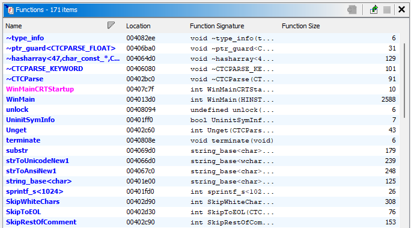
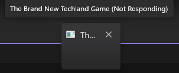
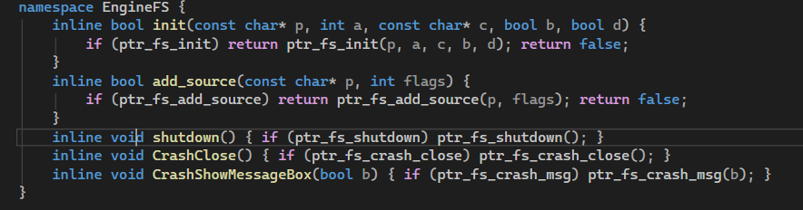
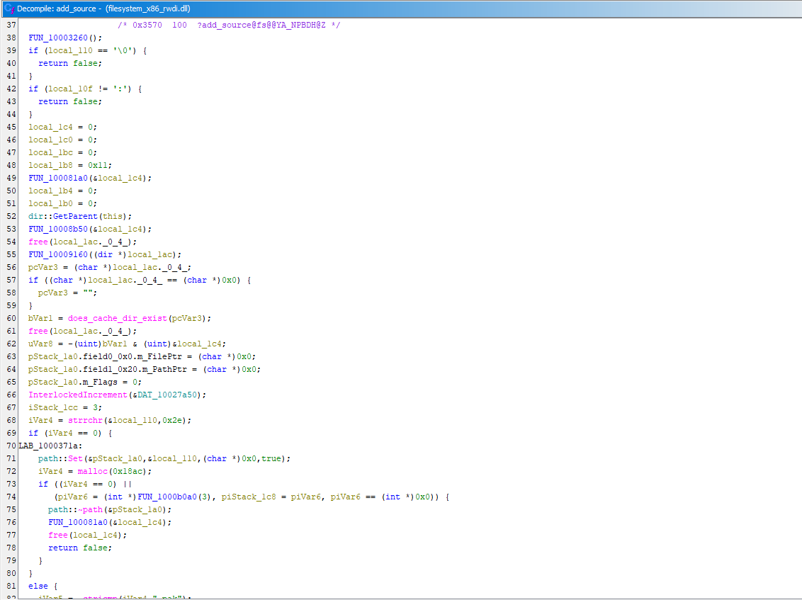
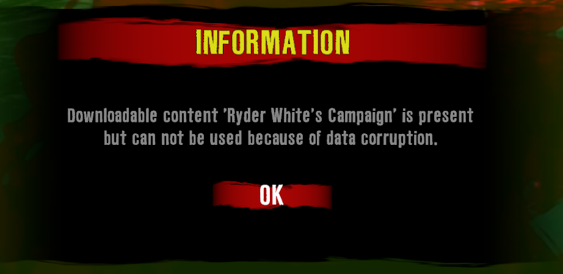

Dead Island EXE Reverse Engineering
February 25, 2026Introduction & The Goal
Recently, I took on the challenge of fully recreating the Dead Island GOTY executable. Using Ghidra, available PDBs (Program Database files), and some AI assistance, I managed to successfully rebuild it from scratch. To get the game to start properly, my first step was figuring out exactly how the executable interacts with the rest of the game's files. Upon digging into the code, I made a crucial discovery: the main executable isn't actually doing the heavy lifting. It essentially acts as a lightweight launcher for the engine's core DLLs and contains only around 150 functions. This realization narrowed my focus significantly, making it clear that my primary objective would simply be remaking the WinMain function to get everything to boot.

The 5x5 Window Anomaly
To get things rolling, I grabbed the decompiled WinMain function and figured out the exact requirements: pulling a list of imports from the game's filesystem and engine DLLs. Thanks to Ghidra, identifying these was a straightforward process.
Miraculously, I managed to get the game to start on the very first try, which was a huge surprise. However, there was one really random issue: the game booted into a tiny 5x5 pixel window titled "The Brand New Techland Game".

0]Having absolutely no idea how to fix this initially, I started digging through the strings in WinMain. I struck gold when I found a string looking for a file named game.ini—which was already sitting right there in the base game directory—used to determine both the window name and class name. After some head-scratching, I realized the issue was my own code. I had initially hardcoded the configuration variables in my remade WinMain to some custom placeholder names (something along the lines of gameClassName = "MyCustomDIWindow"). By forcing these mismatched names, I was clashing with what game.ini was telling the engine to use. Because of this mismatch, the engine essentially gave up on creating the proper window and defaulted to that tiny stub. Once I fixed the variables to properly align with what the engine actually expected:
// --- CONFIGURATION ---
const int EXPECTED_ENGINE_VERSION = 0x10001;
const char* GAME_NAME_SHORT = "DI";
char argGameName[25 = "DI";
char gameBaseName[6 = "game";
char gameClassName[6 = "GameDI";...and let it read from game.ini naturally, it finally generated a properly sized window. ...And then it immediately crashed before anything could render, not even the intro video.
The Crash Loop & Filesystem Initialization
Getting the window to size correctly was a huge relief, but the victory was short-lived. The game now just crashed before anything could be rendered, not even the intro video. I spent ages debugging this, using the Visual Studio debugger to try and find the exception. I eventually found the culprit: the new executable was not initializing the game's filesystem. This is where I got stuck in a serious rut. Google Gemini was really insisting that I needed to force the initialization through some random made up ordinal export (specifically ordinal 1). I was getting pretty frustrated at this point, so I just went along with it, hoping for a magic fix. Unsurprisingly, that approach led absolutely nowhere, and I spent close to 4 hours just banging my head against the wall. FINALLY, I stepped away from the ordinal 1 rabbit hole and took a closer look. The correct function to initialize the filesystem was literally just called FS:Init. I felt like an absolute idiot after trying all that complex stuff when the answer was staring me right in the face. Once I correctly called FS:Init, the engine spun up, and the game actually showed the very first intro video.

...And then proceeded to crash yet again straight after the video finished playing.
Hunting Down the Pak Files
Getting past the filesystem crash loop and seeing the intro video was a massive relief, but the victory was short-lived when the game proceeded to crash yet again straight after the video finished. I ended up figuring out that this was because the engine wasn't loading any of the actual script files. I simply needed to make the game load Data0.pak, Data2.pak, and Data3.pak. I had to hunt through filesystem_x86_rwdi.dll until I found exactly what I needed: a single export named FS:AddSource. Using a wrapper function for this export, I could finally tell the engine which .pak archives to mount.
// Initialize EngineFS
EngineFS::init(outPath.c_str(), 5, "out/cache", 0, 1); // Not entirely sure what out/cache is (maybe mod loading stuff?), but it was in the base EXE's WinMain
EngineFS::add_source(baseGamePath.c_str(), 7); I also had to make sure the game loaded DataEn.pak to actually get the strings and binary files working. Though hardcoding it to mount the English locale .pak pretty much just breaks support for other languages, but it was necessary to get the game to properly start

Fixing DLCs and Expanding Mod Support
Once I had the base files mounting correctly, it finally got to the point of showing the main menu and loading in-game. But as always with this game, there was one big problem: the game threw an error saying that the DLCs were corrupted. I had no idea how to fix it initially, but it turned out the solution was incredibly simple, I just hadn't told the game to load the DLC .pak files yet. I set up a loop to scan for and mount DataDLC0.pak through DataDLC15.pak, along with their respective English locale files (Which also breaks other languages for DLC's...). While I was writing the loops to mount the required archives, I decided to try and add custom .pak loading support. By default, the game stops looking after Data3.pak. It was a simple tweak to just expand that loop to check for and load up to Data63.pak. Just like that, the executable now had native, expanded mod loading support built right in.
// Mount Standard Data PAKs - Expanded to support up to Data63.pak for mods
char pakPath[MAX_PATH];
for (int i = 0; i < 64; i++) {
sprintf_s(pakPath, "%s/Data%d.pak", baseGamePath.c_str(), i);
if (GetFileAttributesA(pakPath) != INVALID_FILE_ATTRIBUTES) {
EngineFS::add_source(pakPath, 0);
// Track Loaded File for debugging 0]
char filename[6 ;
sprintf_s(filename, "Data%d.pak", i);
Utils::TrackFile(filename, "PAK");
}
}
Final Polish & Release
With the game booting, the DLCs functioning, and a mod loader integrated, the difficult part was finally done. Before officially releasing it, I wanted to add a few final quality-of-life features. First, I integrated a basic ImGui debug menu. It simply shows loaded files and the game's own log function in it, which is very helpful for modding and testing. Finally, to ensure the game played better with modern laptop hardware, I added support for AMD PowerXpress and Nvidia Optimus, which makes the game correctly utilize the dedicated GPU instead of defaulting to integrated graphics on modern laptops.
Overall, fully recreating the Dead Island GOTY executable from scratch was an incredibly fun learning experience. If you want to check out the exact implementation or use the custom .pak loader yourself, the fully compiled executable and the complete source code are available over on my GitHub.